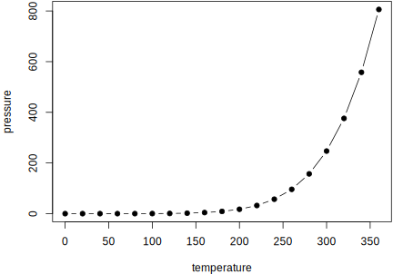

2.4 图片
默认情况下，图片在 knitr 生成的输出文档中没有标题，这意味着它们将放在生成它们的 R 代码处。下面就是这样一个例子。

这样排版图片的缺点是，如果当前页面没有足够的空间放置图片，图片可能会被放在页面的底部（因此会超出页边空白），或者被推到下一页，在当前页面底部留下一大块空白。这基本上就是 LaTeX 中存在着“浮动环境 (floating environments)” 的原因：不能再多个页面上进行拆分（如图片）的元素会被放在浮动环境中，因此它们可以浮动到一个有足够空间容纳它们的页面。但是，向前或向后的浮动也存在着缺点：读者可能需要跳转到另一个页面才能找到当前页面上提到的图片。这只是不得不在多个页面上以固定大小进行排版的一个自然的结果。不过 HTML 中不存在这个问题，因为所有内容都可以被连续地放置在一个页面上（大概有着无限的高度），并且不需要在有着相同页面大小的多个页面上分割任何内容。
如果我们通过区块选项 fig.cap 为代码块分配一个图片标题，那么 R 图形将被放入图形 (figure) 环境中，它将被自动标记和编号，还可以进行交叉引用。图形环境的标签是从代码块的标签生成的。例如，如果块标签是 foo，则图片标签将是 fig:foo（前缀 fig: 在 foo 之前添加）。如果要引用一张图片，请使用语法 \@ref(label)，6，其中 label 是图片标签，例如 fig:foo。
如果要在图片标题中利用 Markdown 格式化的优势，需要使用文本引用（请参阅第 2.2.4 节）。例如，当输出格式为 LaTeX/PDF 时，包含 _斜体文本_ 的图片标题将不起作用，因为下划线是 LaTeX 中的特殊字符。但如果使用文本引用，则当输出为 LaTeX 时，_斜体文本_ 将被转换为 LaTeX 代码。
区块选项 fig.asp 能够被用来设置图片的纵横比。例如图片的高宽比。如果图片的宽度是 6 英寸 (fig.width = 6) 并且 fig.asp = 0.7，则图片的高度将会自动使用 fig.width * fig.asp = 6 * 0.7 = 4.2 计算得出。图 2.1 是使用区块选项 fig.asp = 0.7、fig.width = 6 和 fig.align = 'center' 的一个例子，它是从下面的代码中生成的：

图 2.1: 指定纵横比、宽度和对齐方式的一个图片示例。
图片的实际大小是由区块选项 fig.width 和 fig.height 决定的（图片的大小由图形设备 (graphical device) 生成），并且我们能够通过区块选项 out.width 和 out.height 指定图片的输出大小。这两个选项可能的取值由文档的输出格式决定。例如，out.width = '30%' 对于 HTML 输出格式来说是有效的，但对于 LaTeX/PDF 输出来说是无效值。然而，knitr 会自动地将 x% 格式的 out.width 的百分比值转化为 (x / 100) \linewidth。例如，当输出格式为 LaTeX 时，out.width = '70%' 将会被视为 .7\linewidth。这样的处理使得我们能够以一致的方式指定图片的相对宽度。图 2.2 是 out.width = 70% 的一个示例。
图 2.2: 相对宽度为 70% 的一个图片示例。
如果要在一个图形环境中放置多张图片，则必须使用区块选项 fig.show = 'hold' 来保存代码块中的多张图片，并将它们包含在一个环境中。如果所有图片的宽度之和小于或等于当前线宽 (line width)，也可以并排放置图片。例如，如果两张图片具有相同的宽度 50%，则它们将并排放置。类似地，可以通过指定 out.width = '33%' 在一行并排放置三张图片。图 2.3 是放置两张图的示例，每张图的宽度为 50%。

图 2.3: 并排放置两张图片。
有时，你可能有一些不是从 R 代码生成的图片，这时可以通过函数 knitr::include_graphics() 将它们包含在 R Markdown 中。图 2.4 是在图形环境中包含三个 knitr 徽标的示例。你可以将一个或多个图像路径传递给 include_graphics() 函数，并且应用于普通 R plots 的所有区块选项也适用于这些图像，例如，可以使用 out.width = '33%' 设置这些图像在输出文档中的宽度。
图 2.4: 包含在文档中的来自外部 PNG 图像文件的三个 knitr 徽标。
使用 include_graphics() 有以下一些优点：
- 你不需要担心文档的输出格式，例如，当输出格式为 LaTeX 时，你可能需要使用 LaTeX 命令
\includegraphics{}来引入一张图片，而当输出格式是 Markdown 时，你需要使用。knitr 中的include_graphics()函数能够自动处理这些细节。 - 控制图像属性的语法与图像是从 R 代码生成时的语法相同，例如，区块选项
fig.cap、out.width和fig.show仍然有着相同的含义。 include_graphics()的表现足够智能，可以在输出格式为 LaTeX 且存在 PDF 图片文件时自动使用 PDF 图片，例如，图片路径foo/bar.png能够自动使用foo/bar.pdf进行替换（如果后者存在）。在 LaTeX/PDF 输出中，PDF 图片通常比光栅图像具有更好的质量。要使用此功能，请设置参数auto_pdf = TRUE，或者设置全局配置项options(knitr.graphics.auto_pdf = TRUE)，以便在 R session 中全局启用这个功能。- 你可以使用相同的比例轻松地按比例缩放这些图片。这可以通过
dpi参数（每英寸像素点数）来完成。默认情况下，该参数从区块选项dpi中获取值。如果这个值是数值类型，并且并没有设置区块选项out.width，那么一张图片的输出宽度将会是它的实际宽度（以像素为单位）除以dpi，并且单位变为英寸。例如，对于一张大小为 672 x 480 的图片，在dpi = 96时，它的输出宽度将会是 7 英寸 (7in) 。这个功能需要安装有 png 和/或 jpeg 软件包。通过为区块选项out.width提供非空值，或使用include_graphics(dpi = NA)，你可以覆盖以英寸为单位的图片宽度的自动计算功能。
不要忘记前导的反斜杠！注意
ref后面的括号()；它们不是大括号{}。↩︎